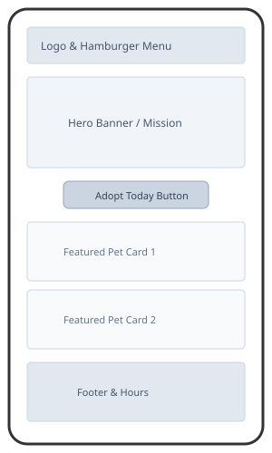
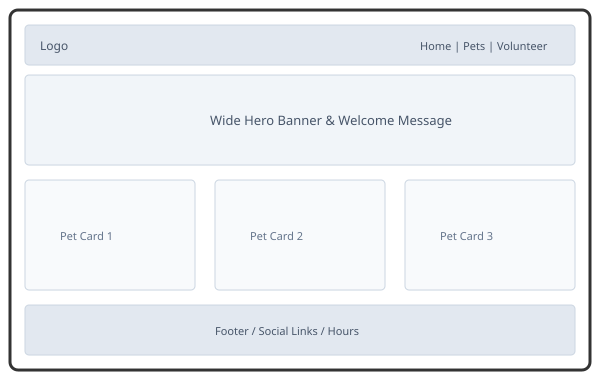

Site Name
Name: Safe Haven Animal Shelter
Reason: This name represents a secure, welcoming, and compassionate environment dedicated to rescuing, caring for, and rehoming vulnerable pets in the community.
Optional Domain Availability: safehaven-animals.org
Site Purpose
The website will serve as an information portal and community hub for Safe Haven Animal Shelter to help connect animals with families. It provides visitors with adoption guidelines, an interactive and filterable catalog of available pets, and details on how to volunteer or donate.
Scenarios
Target audience questions that drive the content and structure of the website:
- What are the adoption requirements and steps to adopt a dog or cat?
- Where can I view the current, up-to-date list of pets currently available for adoption?
- How can I sign up to volunteer at the shelter during the weekends?
Color Scheme
The chosen color palette uses warm, trustworthy, and approachable tones suitable for an animal rescue organization.
Headers & Nav
Buttons & Highlights
Page Background
Main Body Text
Typography
The site uses two clean Google Fonts to ensure readability and a friendly aesthetic.
- Heading Font:
'Poppins', sans-serif— Used for headings and site titles. - Body Font:
'Roboto', sans-serif— Used for paragraph text and general content.
Wireframe
Black and white sketches of the Home Page layout for small and large viewports.
Small Viewport (Mobile)

Large Viewport (Desktop)
